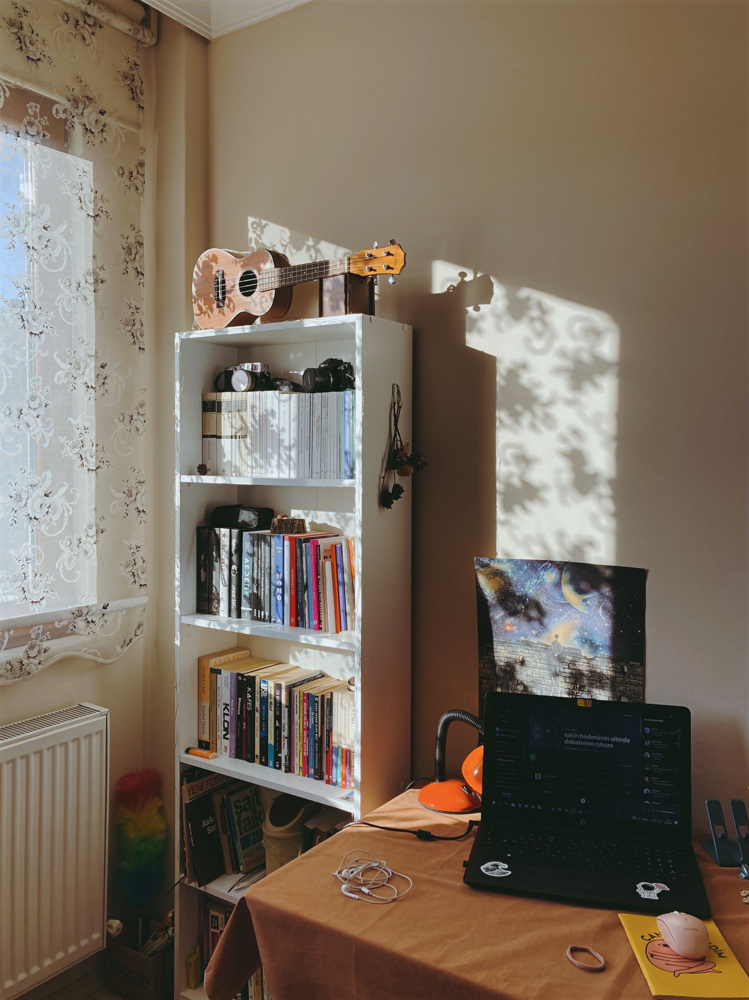

How to Create a Student Room That Feels Calm, Practical & Yours
Your room doesn't need to look like a perfectly styled Pinterest board. It just needs to work for you — somewhere you can study, rest, get ready and actually feel comfortable.

Student rooms can be small, temporary and sometimes a little random. You might have limited storage, shared furniture or a desk that somehow becomes a place for everything.
But you don't need a huge budget or a completely new room to make your space feel better. A few thoughtful changes can make everyday student life much easier.
Start With How You Actually Use Your Room
Before buying storage boxes, decorations or organizers, spend a few days noticing how you naturally use the space.
Where do you normally drop your bag? Where do your clothes end up? Do you study at your desk or somewhere else? Where do you keep chargers, books and everyday essentials?
The goal isn't to force yourself into a perfect organization system. The best system is one that makes sense for your actual habits.
Give Everything a Home
One of the easiest ways to make a room feel less chaotic is to give frequently used things a consistent place.
- Keep everyday stationery together.
- Have one place for chargers and cables.
- Keep university documents in one folder.
- Give shoes, bags and jackets their own area.
- Keep small personal items together instead of spreading them around the room.
You don't need expensive organizers for this. Small boxes, baskets and containers you already have can work perfectly.
Create a Study Corner
Your desk doesn't have to be an elaborate productivity setup. It just needs to make studying easier.
Try keeping the surface relatively clear and leaving only the things you use regularly within reach.
A simple setup could include your laptop, a notebook, stationery, a water bottle and a small lamp.
Everything else can live somewhere else.
Use Vertical Space
When floor space is limited, look upwards.
Shelves, hooks and small wall organizers can give you useful storage without taking up much room.
Even the back of a door can become useful storage for bags, accessories or everyday essentials.
If you're renting or living in university accommodation, check the rules before attaching anything permanently to walls.
Make Your Bed Area Comfortable
Your bed is probably one of the largest parts of the room, so making it comfortable can change the entire feeling of the space.
You don't need lots of decorative pillows or expensive bedding. A comfortable blanket, clean sheets and one or two things you genuinely like can be enough.
Think of the bed as your reset zone — somewhere you can properly switch off after a long day.
Don't Underestimate Lighting
Lighting can completely change how a room feels.
During the day, make use of natural light where possible. In the evening, softer lighting can make the room feel much more relaxed than relying on one bright overhead light.
A small desk lamp or warm bedside light can make your room feel more comfortable without requiring a major redesign.
Keep Decoration Personal
Your room should feel like somewhere you actually live, not a showroom.
Add things that mean something to you — photos, postcards, books, souvenirs, artwork or small objects from places you've visited.
A few personal things can make a temporary student room feel much more like home.
Use the One-Minute Reset
Instead of waiting until your room becomes completely messy, create tiny reset habits.
Before leaving your room, put your clothes where they belong, return your stationery to its place and take any rubbish with you.
These tiny actions take almost no time, but they stop clutter from becoming a huge weekend project.
Don't Buy Organization Just Because It Looks Good
This is especially important when you're scrolling through room inspiration online.
Something can look beautiful in a photo without actually being useful for your life.
Before buying an organizer, ask yourself:
- What problem will this solve?
- Where will it go?
- Will I actually use it?
- Could I organize the same thing with something I already own?
Make a Small Budget
You don't have to redecorate your entire room at once.
Set a small budget and decide what would genuinely make the biggest difference.
You might choose one useful storage item, better lighting or a few personal decorations instead of buying ten things at once.
Do a Weekly Room Reset
Once a week, give yourself around fifteen minutes to reset the room.
- Clear your desk.
- Put clothes away.
- Empty rubbish.
- Return books and stationery to their places.
- Refill anything you use regularly.
- Open the curtains and let some fresh air in.
It doesn't need to become a deep-cleaning session. Think of it as pressing reset before another week begins.
Your Simple Student Room Checklist
- Everything you use regularly has a home.
- Your desk is clear enough to study comfortably.
- Chargers and cables are easy to find.
- Your clothes have a simple system.
- Your lighting works for both studying and relaxing.
- You have a few personal things around you.
- Your room can be reset in around fifteen minutes.
Final Thought
A good student room isn't about having the perfect furniture, the biggest space or the most aesthetic decorations.
It's about creating an environment that supports the life you're actually living.
Keep the things you use close, give everything else a place, make the space personal and don't be afraid to keep it simple.
Your room doesn't have to be perfect. It just has to feel like yours.